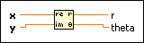

Re/Im To Polar Function
Owning Palette: Complex Functions
Requires: Base Development System
Converts the rectangular components of a complex number into its polar components.
The connector pane displays the default data types for this polymorphic function.

 Add to the block diagram Add to the block diagram |
 Find on the palette Find on the palette |